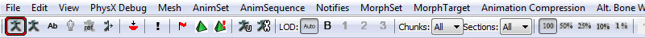

UDN
Search public documentation:
RootMotionCH
English Translation
日本語訳
한국어
Interested in the Unreal Engine?
Visit the Unreal Technology site.
Looking for jobs and company info?
Check out the Epic games site.
Questions about support via UDN?
Contact the UDN Staff
日本語訳
한국어
Interested in the Unreal Engine?
Visit the Unreal Technology site.
Looking for jobs and company info?
Check out the Epic games site.
Questions about support via UDN?
Contact the UDN Staff
根骨骼运动
概述
通过使用数学方程式来在世界中移动actors是可以实现的。以汽车为例，如果一个玩家加速，它将会增加汽车的速度，并更新它的位置。您将会得到以下基本方程式： Velocity = Acceletation * DeltaTime;
Position = Velocity * DeltaTime; 您可以添加很多其它的参数到计算中，比如摩擦力和重力，从而使汽车给人的感觉尽可能得真实。精确地模拟机器设备是非常简单的，但是模拟有机生命是非常困难的。以人类、马或者猴子为例。它们的运动可能是非常不规则的，并不能使用方程式来根据足够简单的模式来适当地模仿他们。无疑，在几年之后生成可以在游戏中实时使用的由程序控制的真实运动是可能的，但目前来说最有效的方案是使用动画来驱动actor的运动。 这种方式的主要思想是把复杂的运动烘焙到动画中，一般来说，这在骨架网格物体的根骨骼上完成，因此名称为：根骨骼运动 。根骨骼运动是从动画中提取出来，然后再将其传递到游戏物理上来使actor产生运动。 关于动画系统的概述, 请参照动画概述页面。
准备骨架网格物体以进行根骨骼应用
要想让一个骨架网格物体使用根骨骼运动，那么请导入具有它的根骨骼运动的动画。预览根骨骼运动可以在动画集编辑器中完成。
预览根骨骼运动
在动画集编辑器中，选择您想预览的动画。如果这是您第一次使用动画集编辑器，那么请参照动画集编辑器用户指南?页面来快速地获得该系统的概要。 请确保您把工具条上的骨骼显示功能能设置为打开状态，您可以通过切换以下按钮来实现：

这显示了SkeletalMesh(骨架网格物体)的骨骼，同时也有根骨骼的预览。 上面的网格物体处于它的第一帧。以下是处于动画播放中的网格物体。
上面的网格物体处于它的第一帧。以下是处于动画播放中的网格物体。
 您可以注意到显示根骨骼的红色线。这是动画的第一帧和当前帧之间的平移。这是actor将会运动的距离。
紫色线显示了根骨骼相对于网格物体原点的平移。不会强制网格物体使其根骨骼从原点开始，但是如果是从原点开始的情况，那么红色线和紫色线将会重叠。
您可以注意到显示根骨骼的红色线。这是动画的第一帧和当前帧之间的平移。这是actor将会运动的距离。
紫色线显示了根骨骼相对于网格物体原点的平移。不会强制网格物体使其根骨骼从原点开始，但是如果是从原点开始的情况，那么红色线和紫色线将会重叠。
在游戏中使用根骨骼运动
在游戏中使用根骨骼运动首先要做的事情是在可以播放动画的动画节点(比如AnimNodeSequence)上启用该功能。在这里您可以控制和那个动画相关的根骨骼选项。
 上面的图片显示了一个非常简单的AnimTree(动画树)设置： 为根骨骼动画配置的AnimNodeSequence(动画节点序列)
上面的图片显示了一个非常简单的AnimTree(动画树)设置： 为根骨骼动画配置的AnimNodeSequence(动画节点序列)
 这里是影响根骨骼运动的AnimNodeSequence(动画节点序列)参数。
这里是影响根骨骼运动的AnimNodeSequence(动画节点序列)参数。
- bZeroRootRotation -锁定根骨骼围绕点(0,0,0)旋转 。
- RootBoneOption[0] - 对应网格物体本地空间X坐标轴的根骨骼选项。
- RootBoneOption[1] - 对应网格物体本地空间 Y坐标轴的根骨骼选项。
- RootBoneOption[2] - 对应网格物体本地空间Z坐标轴的根骨骼选项。
- RBA_Default - 默认行为，使根骨骼从动画进行平移，不影响拥有它的Actor的运动。
- RBA_Discard - 丢弃任何根骨骼运动，把它锁定到第一帧的位置。
- RBA_Translate - 丢弃动画上的根骨骼运动，并且把它的速度传递拥有它的actor。
- 同时播放多个根骨骼运动是可能的。根骨骼运动将会使动画树进行适当地混合，然后把它传送给拥有它的actor。
- 根骨骼运动支持适当地循环动画。
- bForceDiscardRootMotion - 强制根骨骼锁定在本地空间的原点，围绕0点旋转。|
- bRootMotionModeChangeNotify - 调用拥有它的actor的RootMotionModeChanged()事件。|
- RootMotionMode - 描述了网格物体应该如何使用根骨骼运动。|
- RMM_Ignore - 忽略根骨骼运动并不做任何处理。
- RMM_Translate - 使用actor立即移动根骨骼运动间隔(delta)这么大的距离。这在动画后立即发生，并且不使用游戏中的物理。(将不会爬动、滑行或者下降，也不会触发类似于eventBump()的脚本通知)。
- RMM_Velocity - 从根骨骼运动中提取数量级，并用该数量限制Actor的最大速度。这在下一帧发生，并且限制拥有者actor的物理。所以考虑了物理 (向上爬、滑行、下降)并且也是仍然可以发送脚本通知。在这个模式中，Unreal Physics(虚幻物理)仍然提供运动，并且那个动画将会限定速度大小。当您想保持交互的反应时间 和/或 运动的精确度时，这是有用的。(比如：路线、到达一个特定的位置、好的反应时间 w/输入控制器)。
- RMM_Accel - 在这个模式中，根骨骼运动直接插入到Unreal Physics(虚幻物理)中。这意味着在pathing(路线)/ input(输入) 的加速度集被动画的根骨骼运动所覆盖。Unreal Physics(虚幻物理)将会尝试移动actor来匹配动画的根骨骼运动。它将会支持向上爬、滑动、下降等等。当您想使Pawn来匹配一个制作的较为复杂的运动时，这是有用的。同时它也考虑到了世界的地形及碰撞。
无缝转换
您将有可能会面临一些转换问题。从游戏中的物理运动到动画运动的无缝转换是如何实现的呢？ 当在一个网格物体上设置一个新的根骨骼运动模式时，在已经使用这个新的模式处理动画后，它精确地启用一个tick(更新函数)。这样做的目的是阻止和游戏中可能已经处理过的物理的任何冲突。根据不同情境，这可能在不同的时候发生，最多可能会有几个帧延迟。但是有一些方式可以使其进行无缝并容易的转换。
- RMM_Translate - 根据那个模式设置时机的不同，它可以设置在游戏物理已经被处理之前或者之后， 它也可以设置在动画已经被计算之前或者之后。我们能确定的一件事情是，当动画已经使用一种新的模式进行处理后，将仅精确地应用1个tick(更新函数)到根骨骼运动上。为了使转换更加地容易，有一个标记bRootMotionModeChangeNotify，当根骨骼模式改变时该标记将会进行通知。这将在拥有它的actor上触发一个事件，然后可以解释那个转换。当调用了这个事件时，当明确地知道根骨骼运动将会被应用到下一个tick时，我们可以在这里处理转换。您可以比如销毁物理运动(玩家输入、加速度、速度)，并且确实可以假想为根骨骼从那里才开始负责运动。
- RMM_Velocity - 这个模式的应用总是有一帧处于滞后状态。但是因为和上面同样的原因，这样我们可以保证根骨骼在动画被计算以后才被tick(调用更新函数)。使用这个模式进行转换变得更加简单，因为仅需要维持在actor上的一个强制运动，然后等待运动触发来限制速度的大小。强制运动可以通过几种方式来实现，或者通过使用Controller.bPreciseDestination来强制玩家上的输入，或控制actor的加速度/速度。
使用根骨骼运动的示例(为编程人员提供)
这里是使用根骨骼运动的几个示例。
Unreal Script中的RBA_Translate示例
以下抽取的代码，是一个Pawn播放根骨骼运动跳跃动画的示例。请不要尝试按照这些给定的代码来进行编译，这仅仅是作为一个例子提供。
simulated function PlayJumpAnimation(AnimNodeSequence SeqNode)
{
// 播放跳跃动画
SeqNode.SetAnim('Jump');
SeqNode.PlayAnim(false, 1.f);
//在动画节点中打开根骨骼运动
SeqNode.RootBoneOption[0] = RBA_Translate;
SeqNode.RootBoneOption[1] = RBA_Translate;
SeqNode.RootBoneOption[2] = RBA_Translate;
//当动画播放完时，告诉动画节点通知actor
SeqNode.bCauseActorAnimEnd = TRUE;
//告诉网格物体使用根骨骼运动来平移actor
Pawn.Mesh.RootMotionMode = RMM_Translate;
//当骨骼运动将被应用时，告诉网格物体通知我们，
//以便我们可以从物理运动到动画运动进行无缝地转换。
Pawn.Mesh.bRootMotionModeChangeNotify = TRUE;
}
simulated event RootMotionModeChanged(SkeletalMeshComponent SkelComp)
{
/**
* 根骨骼运动将会在下一帧会进行
* 所以我们可以销毁Pawn运动，并让根骨骼运动来接管
*/
if( SkelComp.RootMotionMode == RMM_Translate )
{
Velocity = Vect(0.f, 0.f, 0.f);
Acceleration = Vect(0.f, 0.f, 0.f);
}
//禁用通知
Pawn.Mesh.bRootMotionModeChangeNotify = false;
}
simulated event OnAnimEnd(AnimNodeSequence SeqNode)
{
//完成跳跃
//丢弃根骨骼运动。以便网格物体仍然锁定在原位置。
//我们需要这个来正确地混合到另一个动画
SeqNode.RootBoneOption[0] = RBA_Discard;
SeqNode.RootBoneOption[1] = RBA_Discard;
SeqNode.RootBoneOption[2] = RBA_Discard;
//告诉网格物体停止使用根骨骼运动
Pawn.Mesh.RootMotionMode = RMM_Ignore;
}